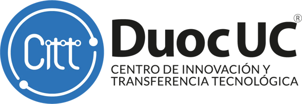

Warmup
miscCodificaciones, comandos Linux y una flag escondida en esta misma página.
fácil

Sexto Campeonato de Ciberseguridad de Duoc UC Sede Antonio Varas y el CITT Antonio Varas.
// MISSION_BRIEF
// CATEGORIES
Alrededor de 25 retos. Cada categoría parte con retos de entrada, así que puedes sumar puntos aunque sea tu primer CTF.
Codificaciones, comandos Linux y una flag escondida en esta misma página.
Inyección SQL, IDOR, cookies, inclusión de archivos y tokens JWT.
Cifrados clásicos, XOR, hashes y RSA con parámetros débiles.
Metadatos, esteganografía, imágenes de disco y análisis de logs.
Capturas pcap con Wireshark y tshark, protocolos en texto claro.
Geolocalización y búsqueda en fuentes abiertas sobre perfiles ficticios.
Binarios con strings, crackmes básicos y scripts ofuscados.
// SAVE_FILES
CyberVaras nació en la Sede Antonio Varas y ya suma cinco campeonatos. Esta es la sexta partida.
// FAQ
Sí. Cada categoría tiene retos de entrada y la sección de recursos tiene una ruta para empezar. Si vienes de los talleres del track, ya tienes la base.
Sí. Los equipos son de 1 a 3 integrantes y cada equipo se arma por su cuenta antes de inscribirse.
Un computador con conexión a internet y navegador. Recomendamos Kali Linux (o cualquier Linux) con Python, Wireshark y CyberChef a mano.
No. La plataforma queda abierta 24 horas y cada equipo juega cuando quiera. Gana el mayor puntaje al cierre; en empate, quien llegó primero a ese puntaje.
La organización crea las cuentas y los equipos en la plataforma con los datos de la inscripción. Antes del inicio cada integrante recibe su acceso en el correo @duocuc.cl que inscribió. Revisa también la carpeta de spam.
Sí, para los tres primeros lugares. Se entregan en una ceremonia posterior al campeonato y se anunciarán junto con la fecha de premiación.
// REGISTER_TEAM
Del viernes 9 al martes 20 de octubre, hasta las 23:59. Solo se aceptan correos @duocuc.cl: con ellos creamos la cuenta de cada integrante en la plataforma.
// LIVE_SCOREBOARD
| # | Equipo | Puntos | Avance |
|---|
// TRAINING_GROUND
Si es tu primer CTF, sigue esta ruta en las semanas previas. Todo es gratuito y se practica en entornos preparados para aprender.
Juega los primeros niveles de Bandit en OverTheWire: navegar archivos, permisos, grep, ssh.
Lee CTF101 y prueba los retos más fáciles de picoGym, organizados por categoría.
Ten listos CyberChef, Wireshark, Python y un navegador con herramientas de desarrollo.
Elige la categoría que más te guste y haz los ejercicios guiados de abajo.
// TOOLKIT
file, strings, binwalk, xxd.http, tcp.stream eq 0 y Follow → TCP Stream.site:, filetype:).strings y file antes de abrir el binario.Practica solo en plataformas y laboratorios hechos para eso. Usar estas técnicas contra sistemas reales sin autorización es ilegal y va contra las bases del campeonato.
// CONTACT
¿Dudas sobre la inscripción, la plataforma o las bases? Escríbenos y te respondemos al correo que indiques.
El formulario de contacto se habilita junto con la apertura de las inscripciones.
// RULES.md
Sexto Campeonato de Ciberseguridad CyberVaras 2026. Al inscribirte aceptas estas bases.
Organizan Duoc UC Sede Antonio Varas y el Track de Ciberseguridad del CITT Antonio Varas, Escuela de Informática y Telecomunicaciones, en el marco del Mes de la Ciberseguridad.
Estudiantes regulares de Duoc UC de cualquier sede y carrera, con cuenta @duocuc.cl vigente. Docentes y miembros del equipo organizador no compiten.
De 1 a 3 integrantes. Cada persona puede pertenecer a un solo equipo y no se permiten cambios de integrantes después del cierre de inscripciones.
En esta página, solo con correos @duocuc.cl, entre el 9 y el 20 de octubre de 2026. La organización crea las cuentas y los equipos en la plataforma y envía el acceso a cada integrante en su correo @duocuc.cl antes del inicio.
Competencia jeopardy online de 24 horas, desde el viernes 23 de octubre de 2026 a las 18:00 hasta el sábado 24 a las 18:00. Los retos se publican al inicio en la plataforma.
Cada reto entrega puntaje dinámico según cuántos equipos lo resuelven. En caso de empate gana el equipo que alcanzó primero el puntaje final. Las flags tienen el formato CITT{...}.
Las técnicas se aplican solo sobre la infraestructura del CTF, un entorno controlado y autorizado con fines formativos. Está prohibido:
El incumplimiento de estas bases puede implicar anulación de puntaje o descalificación del equipo, a criterio de la organización.
Se premia a los tres primeros lugares en una ceremonia posterior al campeonato. Los premios se definen con el CITT y la Dirección de Carrera y se informan oportunamente.
Los datos de inscripción se usan solo para gestionar el evento. Cada participante indica al inscribirse si autoriza el uso de fotografías para difusión.
Mediante el formulario de contacto de esta página. Cualquier situación no prevista la resuelve el equipo organizador.